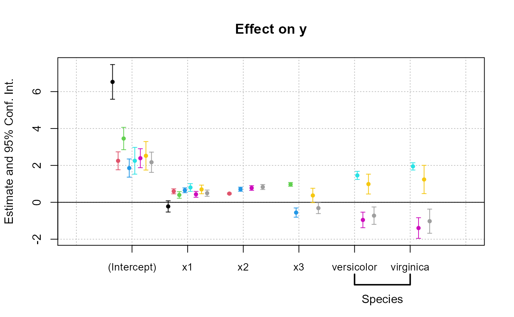

You can set formula macros globally with setFixest_fml. These macros can then be used in fixest estimations or when using the function xpd.
setFixest_fml(..., reset = FALSE)
getFixest_fml()Definition of the macro variables. Each argument name corresponds to the name of the macro variable. It is required that each macro variable name starts with two dots (e.g. ..ctrl). The value of each argument must be a one-sided formula or a character vector, it is the definition of the macro variable. Example of a valid call: setFixest_fml(..ctrl = ~ var1 + var2). In the function xpd, the default macro variables are taken from getFixest_fml, any variable in ... will replace these values. You can enclose values in .[], if so they will be evaluated from the current environment. For example ..ctrl = ~ x.[1:2] + .[z] will lead to ~x1 + x2 + var if z is equal to "var".
A logical scalar, defaults to FALSE. If TRUE, all macro variables are first reset (i.e. deleted).
The function getFixest_fml() returns a list of character strings, the names corresponding to the macro variable names, the character strings corresponding to their definition.
In xpd, the default macro variables are taken from getFixest_fml. Any value in the ... argument of xpd will replace these default values.
The definitions of the macro variables will replace in verbatim the macro variables. Therefore, you can include multipart formulas if you wish but then beware of the order the the macros variable in the formula. For example, using the airquality data, say you want to set as controls the variable Temp and Day fixed-effects, you can do setFixest_fml(..ctrl = ~Temp | Day), but then feols(Ozone ~ Wind + ..ctrl, airquality) will be quite different from feols(Ozone ~ ..ctrl + Wind, airquality), so beware!
xpd to make use of formula macros.
# Small examples with airquality data
data(airquality)
# we set two macro variables
setFixest_fml(..ctrl = ~ Temp + Day,
..ctrl_long = ~ poly(Temp, 2) + poly(Day, 2))
# Using the macro in lm with xpd:
lm(xpd(Ozone ~ Wind + ..ctrl), airquality)
#>
#> Call:
#> lm(formula = xpd(Ozone ~ Wind + ..ctrl), data = airquality)
#>
#> Coefficients:
#> (Intercept) Wind Temp Day
#> -76.5168 -3.0681 1.8622 0.2506
#>
lm(xpd(Ozone ~ Wind + ..ctrl_long), airquality)
#>
#> Call:
#> lm(formula = xpd(Ozone ~ Wind + ..ctrl_long), data = airquality)
#>
#> Coefficients:
#> (Intercept) Wind poly(Temp, 2)1 poly(Temp, 2)2 poly(Day, 2)1
#> 69.603 -2.773 206.921 90.449 26.681
#> poly(Day, 2)2
#> 20.483
#>
# You can use the macros without xpd() in fixest estimations
a = feols(Ozone ~ Wind + ..ctrl, airquality)
#> NOTE: 37 observations removed because of NA values (LHS: 37).
b = feols(Ozone ~ Wind + ..ctrl_long, airquality)
#> NOTE: 37 observations removed because of NA values (LHS: 37).
etable(a, b, keep = "Int|Win")
#> a b
#> Dependent Var.: Ozone Ozone
#>
#> (Intercept) -76.52** (24.11) 69.60*** (6.637)
#> Wind -3.068*** (0.6629) -2.773*** (0.6451)
#> _______________ __________________ __________________
#> S.E. type IID IID
#> Observations 116 116
#> R2 0.57308 0.62167
#> Adj. R2 0.56164 0.60447
#> ---
#> Signif. codes: 0 '***' 0.001 '**' 0.01 '*' 0.05 '.' 0.1 ' ' 1
# Using .[]
base = setNames(iris, c("y", "x1", "x2", "x3", "species"))
i = 2:3
z = "species"
lm(xpd(y ~ x.[2:3] + .[z]), base)
#>
#> Call:
#> lm(formula = xpd(y ~ x.[2:3] + .[z]), data = base)
#>
#> Coefficients:
#> (Intercept) x2 x3 speciesversicolor
#> 3.682982 0.905946 -0.005995 -1.598362
#> speciesvirginica
#> -2.112647
#>
# No xpd() needed in feols
feols(y ~ x.[2:3] + .[z], base)
#> OLS estimation, Dep. Var.: y
#> Observations: 150
#> Standard-errors: IID
#> Estimate Std. Error t value Pr(>|t|)
#> (Intercept) 3.682982 0.107403 34.291343 < 2.2e-16 ***
#> x2 0.905946 0.074311 12.191282 < 2.2e-16 ***
#> x3 -0.005995 0.156260 -0.038368 9.6945e-01
#> speciesversicolor -1.598362 0.205706 -7.770113 1.3154e-12 ***
#> speciesvirginica -2.112647 0.304024 -6.948940 1.1550e-10 ***
#> ---
#> Signif. codes: 0 '***' 0.001 '**' 0.01 '*' 0.05 '.' 0.1 ' ' 1
#> RMSE: 0.333482 Adj. R2: 0.832221
#
# You can use xpd for stepwise estimations
#
# Note that for stepwise estimations in fixest, you can use
# the stepwise functions: sw, sw0, csw, csw0
# -> see help in feols or in the dedicated vignette
# we want to look at the effect of x1 on y
# controlling for different variables
base = iris
names(base) = c("y", "x1", "x2", "x3", "species")
# We first create a matrix with all possible combinations of variables
my_args = lapply(names(base)[-(1:2)], function(x) c("", x))
(all_combs = as.matrix(do.call("expand.grid", my_args)))
#> Var1 Var2 Var3
#> [1,] "" "" ""
#> [2,] "x2" "" ""
#> [3,] "" "x3" ""
#> [4,] "x2" "x3" ""
#> [5,] "" "" "species"
#> [6,] "x2" "" "species"
#> [7,] "" "x3" "species"
#> [8,] "x2" "x3" "species"
res_all = list()
for(i in 1:nrow(all_combs)){
res_all[[i]] = feols(xpd(y ~ x1 + ..v, ..v = all_combs[i, ]), base)
}
etable(res_all)
#> model 1 model 2 model 3
#> Dependent Var.: y y y
#>
#> (Intercept) 6.526*** (0.4789) 2.249*** (0.2480) 3.457*** (0.3092)
#> x1 -0.2234 (0.1551) 0.5955*** (0.0693) 0.3991*** (0.0911)
#> x2 0.4719*** (0.0171)
#> x3 0.9721*** (0.0521)
#> speciesversicolor
#> speciesvirginica
#> _________________ _________________ __________________ __________________
#> S.E. type IID IID IID
#> Observations 150 150 150
#> R2 0.01382 0.84018 0.70724
#> Adj. R2 0.00716 0.83800 0.70325
#>
#> model 4 model 5 model 6
#> Dependent Var.: y y y
#>
#> (Intercept) 1.856*** (0.2508) 2.251*** (0.3698) 2.390*** (0.2623)
#> x1 0.6508*** (0.0667) 0.8036*** (0.1063) 0.4322*** (0.0814)
#> x2 0.7091*** (0.0567) 0.7756*** (0.0643)
#> x3 -0.5565*** (0.1275)
#> speciesversicolor 1.459*** (0.1121) -0.9558*** (0.2152)
#> speciesvirginica 1.947*** (0.1000) -1.394*** (0.2857)
#> _________________ ___________________ __________________ ___________________
#> S.E. type IID IID IID
#> Observations 150 150 150
#> R2 0.85861 0.72591 0.86331
#> Adj. R2 0.85571 0.72027 0.85954
#>
#> model 7 model 8
#> Dependent Var.: y y
#>
#> (Intercept) 2.521*** (0.3939) 2.171*** (0.2798)
#> x1 0.6982*** (0.1195) 0.4959*** (0.0861)
#> x2 0.8292*** (0.0685)
#> x3 0.3716. (0.1983) -0.3152* (0.1512)
#> speciesversicolor 0.9881*** (0.2747) -0.7236** (0.2402)
#> speciesvirginica 1.238** (0.3913) -1.023** (0.3337)
#> _________________ __________________ __________________
#> S.E. type IID IID
#> Observations 150 150
#> R2 0.73238 0.86731
#> Adj. R2 0.72500 0.86271
#> ---
#> Signif. codes: 0 '***' 0.001 '**' 0.01 '*' 0.05 '.' 0.1 ' ' 1
coefplot(res_all, group = list(Species = "^^species"))

#
# You can use macros to grep variables in your data set
#
# Example 1: setting a macro variable globally
data(longley)
setFixest_fml(..many_vars = grep("GNP|ployed", names(longley), value = TRUE))
feols(Armed.Forces ~ Population + ..many_vars, longley)
#> OLS estimation, Dep. Var.: Armed.Forces
#> Observations: 16
#> Standard-errors: IID
#> Estimate Std. Error t value Pr(>|t|)
#> (Intercept) 4403.682352 4091.847594 1.076209 0.307112
#> Population -22.844324 32.671302 -0.699217 0.500356
#> GNP.deflator 7.638472 12.347773 0.618611 0.550003
#> GNP 3.150533 3.554170 0.886433 0.396201
#> Unemployed -0.591649 0.389005 -1.520928 0.159248
#> Employed -50.059800 25.348299 -1.974878 0.076522 .
#> ---
#> Signif. codes: 0 '***' 0.001 '**' 0.01 '*' 0.05 '.' 0.1 ' ' 1
#> RMSE: 36.1 Adj. R2: 0.569345
# Example 2: using ..("regex") or regex("regex") to grep the variables "live"
feols(Armed.Forces ~ Population + ..("GNP|ployed"), longley)
#> OLS estimation, Dep. Var.: Armed.Forces
#> Observations: 16
#> Standard-errors: IID
#> Estimate Std. Error t value Pr(>|t|)
#> (Intercept) 4403.682352 4091.847594 1.076209 0.307112
#> Population -22.844324 32.671302 -0.699217 0.500356
#> GNP.deflator 7.638472 12.347773 0.618611 0.550003
#> GNP 3.150533 3.554170 0.886433 0.396201
#> Unemployed -0.591649 0.389005 -1.520928 0.159248
#> Employed -50.059800 25.348299 -1.974878 0.076522 .
#> ---
#> Signif. codes: 0 '***' 0.001 '**' 0.01 '*' 0.05 '.' 0.1 ' ' 1
#> RMSE: 36.1 Adj. R2: 0.569345
# Example 3: same as Ex.2 but without using a fixest estimation
# Here we need to use xpd():
lm(xpd(Armed.Forces ~ Population + regex("GNP|ployed"), data = longley), longley)
#>
#> Call:
#> lm(formula = xpd(Armed.Forces ~ Population + regex("GNP|ployed"),
#> data = longley), data = longley)
#>
#> Coefficients:
#> (Intercept) Population GNP.deflator GNP Unemployed
#> 4403.6824 -22.8443 7.6385 3.1505 -0.5916
#> Employed
#> -50.0598
#>
# Stepwise estimation with regex: use a comma after the parenthesis
feols(Armed.Forces ~ Population + sw(regex(,"GNP|ployed")), longley)
#> Standard-errors: IID
#> Expl. vars.: Population + GNP.deflator
#> Estimate Std. Error t value Pr(>|t|)
#> (Intercept) 1126.8354 573.65977 1.96429 0.071242 .
#> Population -21.9900 10.44869 -2.10457 0.055351 .
#> GNP.deflator 16.8762 6.73510 2.50570 0.026304 *
#> ---
#> Expl. vars.: Population + GNP
#> Estimate Std. Error t value Pr(>|t|)
#> (Intercept) 4123.92248 1276.578585 3.23045 0.0065709 **
#> Population -44.01096 14.088805 -3.12382 0.0080681 **
#> GNP 3.36522 0.985998 3.41301 0.0046253 **
#> ---
#> Expl. vars.: Population + Unemployed
#> Estimate Std. Error t value Pr(>|t|)
#> (Intercept) -627.459659 282.947983 -2.21758 0.0450189 *
#> Population 9.201621 2.755427 3.33945 0.0053277 **
#> Unemployed -0.602393 0.205112 -2.93689 0.0115594 *
#> ---
#> Expl. vars.: Population + Employed
#> Estimate Std. Error t value Pr(>|t|)
#> (Intercept) -396.96880 310.16774 -1.27985 0.22297
#> Population -9.63435 8.44253 -1.14117 0.27439
#> Employed 27.38861 16.72199 1.63788 0.12541
# Multiple LHS
etable(feols(..("GNP|ployed") ~ Population, longley))
#> model 1 model 2 model 3
#> Dependent Var.: GNP.deflator GNP Unemployed
#>
#> (Intercept) -76.69*** (9.903) -1,275.2*** (59.83) -763.7* (307.0)
#> Population 1.519*** (0.0842) 14.16*** (0.5086) 9.223** (2.610)
#> _______________ _________________ ___________________ _______________
#> S.E. type IID IID IID
#> Observations 16 16 16
#> R2 0.95876 0.98226 0.47135
#> Adj. R2 0.95582 0.98099 0.43359
#>
#> model 4
#> Dependent Var.: Employed
#>
#> (Intercept) 8.381. (4.422)
#> Population 0.4849*** (0.0376)
#> _______________ __________________
#> S.E. type IID
#> Observations 16
#> R2 0.92235
#> Adj. R2 0.91680
#> ---
#> Signif. codes: 0 '***' 0.001 '**' 0.01 '*' 0.05 '.' 0.1 ' ' 1
#
# lhs and rhs arguments
#
# to create a one sided formula from a character vector
vars = letters[1:5]
xpd(rhs = vars)
#> ~a + b + c + d + e
#> <environment: 0x0000000051c95bf0>
# Alternatively, to replace the RHS
xpd(y ~ 1, rhs = vars)
#> y ~ a + b + c + d + e
#> <environment: 0x0000000053095580>
# To create a two sided formula
xpd(lhs = "y", rhs = vars)
#> y ~ a + b + c + d + e
#> <environment: 0x0000000051a1d820>
#
# Dot square bracket operator
#
# You can create multiple variables at once
xpd(y ~ x.[1:5] + z.[2:3])
#> y ~ x1 + x2 + x3 + x4 + x5 + z2 + z3
#> <environment: 0x0000000053095580>
# You can summon variables from the environment
var = "a"
xpd(y ~ x.[var])
#> y ~ xa
#> <environment: 0x0000000053095580>
# ... the variables can be multiple
vars = LETTERS[1:3]
xpd(y ~ x.[vars])
#> y ~ xA + xB + xC
#> <environment: 0x0000000053095580>
# You can have "complex" variable names but they must be nested in character form
xpd(y ~ .["x.[vars]_sq"])
#> y ~ xA_sq + xB_sq + xC_sq
#> <environment: 0x0000000053095580>
# DSB can be used within regular expressions
re = c("GNP", "Pop")
xpd(Unemployed ~ regex(".[re]"), data = longley)
#> Unemployed ~ GNP.deflator + GNP + Population
#> <environment: 0x0000000053095580>
# => equivalent to regex("GNP|Pop")
# Use .[,var] (NOTE THE COMMA!) to expand with commas
# !! can break the formula if missused
vars = c("wage", "unemp")
xpd(c(y.[,1:3]) ~ csw(.[,vars]))
#> c(y1, y2, y3) ~ csw(wage, unemp)
#> <environment: 0x0000000053095580>
# Example of use of .[] within a loop
res_all = list()
for(p in 1:3){
res_all[[p]] = feols(Ozone ~ Wind + poly(Temp, .[p]), airquality)
}
#> NOTE: 37 observations removed because of NA values (LHS: 37).
#> NOTE: 37 observations removed because of NA values (LHS: 37).
#> NOTE: 37 observations removed because of NA values (LHS: 37).
etable(res_all)
#> model 1 model 2 model 3
#> Dependent Var.: Ozone Ozone Ozone
#>
#> (Intercept) 72.28*** (6.847) 70.40*** (6.518) 71.31*** (6.512)
#> Wind -3.055*** (0.6633) -2.866*** (0.6315) -2.928*** (0.6295)
#> poly(Temp)1 214.7*** (29.17) 209.0*** (27.73) 201.5*** (28.02)
#> poly(Temp)2 93.36*** (25.44) 101.7*** (25.91)
#> poly(Temp)3 -37.32 (25.03)
#> _______________ __________________ __________________ __________________
#> S.E. type IID IID IID
#> Observations 116 116 116
#> R2 0.56871 0.61501 0.62256
#> Adj. R2 0.56108 0.60469 0.60896
#> ---
#> Signif. codes: 0 '***' 0.001 '**' 0.01 '*' 0.05 '.' 0.1 ' ' 1
# The former can be compactly estimated with:
res_compact = feols(Ozone ~ Wind + sw(.[, "poly(Temp, .[1:3])"]), airquality)
#> NOTE: 37 observations removed because of NA values (LHS: 37). [This msg only concerns the variables common to all estimations.]
etable(res_compact)
#> model 1 model 2 model 3
#> Dependent Var.: Ozone Ozone Ozone
#>
#> (Intercept) 72.28*** (6.847) 70.40*** (6.518) 71.31*** (6.512)
#> Wind -3.055*** (0.6633) -2.866*** (0.6315) -2.928*** (0.6295)
#> poly(Temp)1 214.7*** (29.17) 209.0*** (27.73) 201.5*** (28.02)
#> poly(Temp)2 93.36*** (25.44) 101.7*** (25.91)
#> poly(Temp)3 -37.32 (25.03)
#> _______________ __________________ __________________ __________________
#> S.E. type IID IID IID
#> Observations 116 116 116
#> R2 0.56871 0.61501 0.62256
#> Adj. R2 0.56108 0.60469 0.60896
#> ---
#> Signif. codes: 0 '***' 0.001 '**' 0.01 '*' 0.05 '.' 0.1 ' ' 1
# How does it work?
# 1) .[, stuff] evaluates stuff and, if a vector, aggregates it with commas
# Comma aggregation is done thanks to the comma placed after the square bracket
# If .[stuff], then aggregation is with sums.
# 2) stuff is evaluated, and if it is a character string, it is evaluated with
# the function dsb which expands values in .[]
#
# Wrapping up:
# 2) evaluation of dsb("poly(Temp, .[1:3])") leads to the vector:
# c("poly(Temp, 1)", "poly(Temp, 2)", "poly(Temp, 3)")
# 1) .[, c("poly(Temp, 1)", "poly(Temp, 2)", "poly(Temp, 3)")] leads to
# poly(Temp, 1), poly(Temp, 2), poly(Temp, 3)
#
# Hence sw(.[, "poly(Temp, .[1:3])"]) becomes:
# sw(poly(Temp, 1), poly(Temp, 2), poly(Temp, 3))